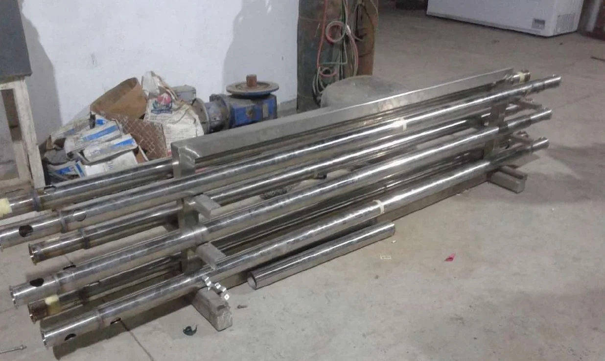
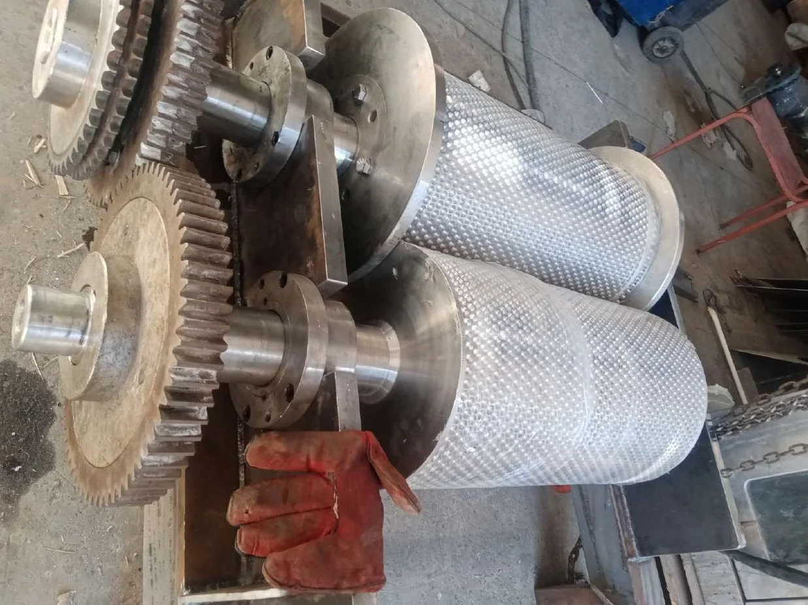

Tanks & Process Vessels · 8 photos
Stainless Steel Tanks & Process Vessels
Large cylindrical vessels, dimple-jacketed shells, mobile conical-bottom units, horizontal cradle tanks, and factory-installed systems.
View archiveCustom metal fabrication, stainless steel equipment and integrated industrial engineering solutions, designed around your manufacturing requirements.
01 / FROM OUR PROJECT ARCHIVE
Comprehensive sheet metal and stainless steel fabrication tailored to demanding industrial and hygienic environments.
Explore division ↗
One-stop turnkey engineering, fabrication, installation, and maintenance of process equipment, utility networks, and complete production lines.
Explore division ↗Explore our industrial equipment families.

Liquid IBC totes, cylindrical & vertical vessels, eccentric-bottom tanks, powder containment, and FRP chemical storage.
Explore equipment ↗
Liquid mixing tanks, electric heating jacketed units, agitator vessels, pneumatic mixers, and 100L–2000L chemical mixers.
Explore equipment ↗
Sanitary mixers, steam-jacketed kettles, planetary stir-fry cookers, triple-walled cheese vats, and hygiene/cream lines.
Explore equipment ↗
Precision screw feeders, horizontal/inclined screw conveyors, tubular & U-trough builds, and shaftless sludge designs.
Explore equipment ↗
Automatic liquid feed systems, industrial water & feed pumps, dual-shaft shredders, crushers, and recycling lines.
Explore equipment ↗Curated photographic record from Steel Technology's workshop and field installations, organized by equipment type.
Large cylindrical vessels, dimple-jacketed shells, mobile conical-bottom units, horizontal cradle tanks, and factory-installed systems.
View archiveBelt conveyor assemblies with geared drive motors, pneumatic sorting stations, motorized tubular transfer drives, and perforated drum machinery.
View archive
Flanged polished stainless tubular runs with radial ports, alongside heavy coiled tubular heat-exchange / process assemblies.
View archiveSelected companies listed in our company reference archive, across four industrial sectors.
Nestlé
Heinz
Marbella Food Industries
Techno Taste
Al Bawadi Food Industries
Sedico Pharmaceuticals
October Pharma
Arab Pharmaceutical Packaging
Henkel
EverGrow
International Paints
Talaat Moustafa Group (TMG)
EMCO

We support equipment localization and replacement of legacy components through dimensional measurement, engineering review and local manufacturing.